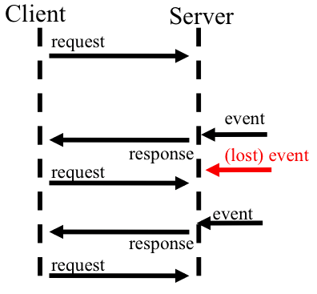
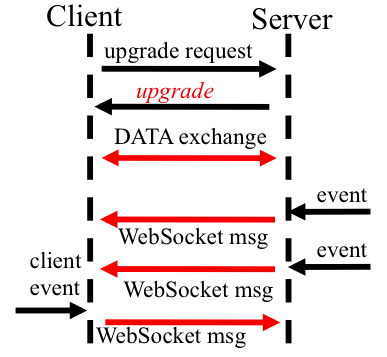

<SCRIPT LANGUAGE="JavaScript">
document.write("Hello!")
</SCRIPT>
<SCRIPT LANGUAGE="JavaScript" src="filename.js"> </SCRIPT>
//this is a comment
/*this is another comment*/
var year=2012; var radius=3.7;
var name="This is a string";
var myBoolean=true;
1 == "1" >> true 0 == '' >> true ',,,' == new Array(4) >> true //better use === 0 === '' >> false ',,,' === new Array(4) >> false
var x="";
var time=new Date().getHours();
if (time<20){
x="Good day";
}
if (time<10){
x="Good morning";
}
else if (time<20){
x="Good day";
}
else{
x="Good evening";
}
var x="";
var d=new Date().getDay();
switch (d){
case 6:
x="Today it's Saturday";
break;
case 0:
x="Today it's Sunday";
break;
default:
x="Looking forward to the Weekend";
}
for (var i=0; i<3; i++) {
document.write("This is a for loop.");
}
var x="",i=0;
while (i<4){
x=x + "The number is " + i;
i++;
}
var x="",i=0;
do{
x=x + "The number is " + i;
i++;
}
while (i<4)
var bob = {
name: "bob",
age: 42,
toString: function() {
return "My name is " + this.name;
},
friends: ["peter", "hans"],
contacts: {
peter: 123456,
hans: 654321
}
};
//retrieve a value
bob.name
>> "bob"
bob["age"]
>> 42
bob.0 //SyntaxError
bob["0"]
bob.parents
>> undefined
//update a value
bob.age = 50;
//delete a value
delete bob.age
var items = {
bread: 1.00,
tea: 2.50,
butter: 0.90
};
for(var item in items) {
console.log(item + " costs " + items[item] + " €");
}
>> "bread costs 1.00 €"
>> "tea costs 2.50 €"
>> "butter costs 0.90 €"
var numbersArray = ["zero", "one", "two"];
var numbersObject = {
0: "zero",
1: "one",
2: "two"
};
numbersArray[0]
>> "zero"
numbersArray[5]
>> undefined
numbersArray[5] = "five"
numbersArray.length
>> 3
numbersArray.indexOf("one");
>> 1
var foo = [1,2,3,4,5];
for (var i = 0; i < foo.length; i++) {
console.log(foo[i]);
}
>> 1 2 3 4 5
//since JavaScript 1.6
foo.forEach(function(item,index,array) {
console.log(item);
});
>> 1 2 3 4 5
//don't do this!
var foo = [1,2,3,4,5];
foo.bar = "foobar";
for(var index in foo) {
console.log(foo[index]);
}
>> 1 2 3 4 5 "foobar"
JavaScript is the only language where good programmers believe they can use it effectively, without learning it.
Douglas Crockford
var add = function(a, b) {
return a + b;
};
function add(a, b) {
return a + b;
}
function makeFilter(regex) {
return function(string) {
return string.replace(regex; '');
};
};
var numberFilter = makeFilter(/\d+/g);
numberFilter("AB12AB12");
>> "ABAB"
button.onclick(function() {
alert("Click!");
});
var Shape = function(x, y) {
this.x = x;
this.y = y;
this.toString = function() {
return "Shape at " + this.x + " : " + this.y;
};
this.draw = function() {
return "Shape";
};
};
var shape1 = new Shape(5,5);
var shape2 = new Shape(10,10);
//a better approach
var Shape = function(x, y) {
this.x = x;
this.y = y;
};
Shape.prototype.toString = function() {
return "shape at " + this.x + " : " + this.y;
};
Shape.prototype.draw = function() {
return "Shape";
};
var shape1 = new Shape(5,5);
var shape2 = new Shape(10,10);
var array = [1,2,3,4];
Array.prototype.contains = function(element) {
for(var i = 0; i < this.length; i++) {
if (this[i] === element) {
return true;
}
}
return false;
};
array.contains(1);
>> true
function aFunction() {
var foo = 1;
if(true) {
var foo = 2;
}
//foo === 2
}
(function() {
//do something, function has own scope
var foo = 5;
})();
//foo === undefined
var foo = 5; window.foo >> 5 //attention, implied global! bar = 10; window.bar >> 10
var myModule = (function() {
var privateNumber = 0;
var privateFunction = function() {
//do something
};
return {
publicNumber: privateNumber++,
publicFunction: function() {
//do something
}
};
})();
|  |
|
|  |
Browser
GET /chatService HTTP/1.1 Host: server.example.com Upgrade: websocket Connection: Upgrade Sec-WebSocket-Key: dGhlIHNhbXBsZSBub25jZQ== Sec-WebSocket-Origin: http://example.com Sec-WebSocket-Protocol: chat, superchat Sec-WebSocket-Version: 8
Server
HTTP/1.1 101 Switching Protocols Upgrade: websocket Connection: Upgrade Sec-WebSocket-Accept: s3pPLMBiTxaQ9kYGzzhZRbK+xOo= Sec-WebSocket-Protocol: superchat
// Create new WebSocket
var mySocket = new WebSocket("ws://echo.websockets.org");
// Attach listeners
mySocket.onmessage = function(event) { alert("Der Server sagt: " + event.data); };
mySocket.onopen = function(event) {...};
mySocket.onclose = function(event) {...};
mySocket.onerror = function(event) {...};
// Send data...
mySocket.send("Hallo Server!");
// Close WebSocket
mySocket.close();
\0x00Hello, WebSocket\0xff
var test haha <script> Haha </script>
var listeningSocket = http.socket.listen(8080);
// loop endlessly
while (true) {
var request = listeningSocket.accept();
// process is blocked until a client connects
var requestedFile = request.getRequestedFileName();
var data = io.file.open(requestedFile).read();
request.respond(data);
request.closeConnection();
}
var listeningSocket = http.socket.listen(8080);
var input = [listeningSocket];
function eventLoop() {
while (true) {
var descriptors = io.select(input, [], []);
// get all readable file descriptors
var ready = descriptors.inputready;
for (var i; i < ready.length; i++) {
// handle events
}
}
}
eventLoop();
A server side JavaScript runtime
var http = require('http');
http.createServer(function (req, res) {
res.writeHead(200, {'Content-Type': 'text/plain'});
res.end('Hello World\n');
}).listen(1337, '127.0.0.1');
// requiring module
var util = require('util');
// using the module
output = util.format('%s:%s', 'foo', 'bar', 'baz'); // 'foo:bar baz'
util.log(output);
var PI = Math.PI;
// export module functions
exports.area = function (r) {
return PI * r * r;
};
exports.circumference = function (r) {
return 2 * PI * r;
};
var circle = require('./circle.js');
console.log(circle.area(23.42));
{
"name" : "javascript-slides",
"description" : "Slides software using HTML5, CoffeeScript and Node.js",
"version" : "1.0.0",
"author" : "Realtime Webapps Team",
"directories" : { "lib" : "lib" },
"engines" : {
"node": ">= 0.6.0",
"npm" : ">= 1.1.*"
},
"dependencies": {
"express" : ">= 3.0",
"log4js" : ">= 0.5.0",
"sanitizer" : ">= 0.0.15",
"socket.io" : ">= 0.9.6"
}
}
/
#